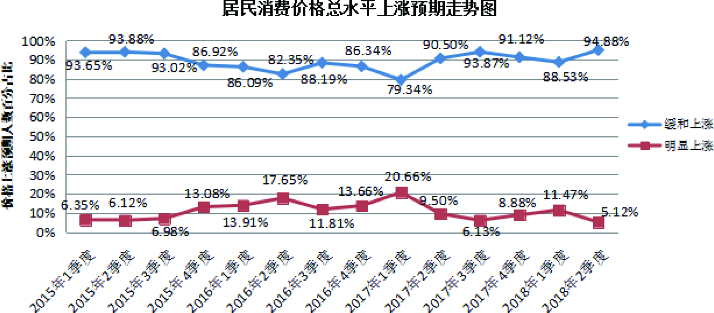
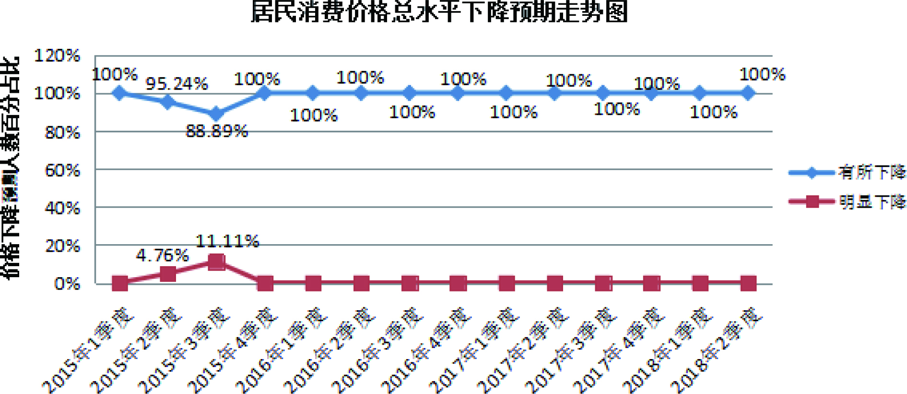
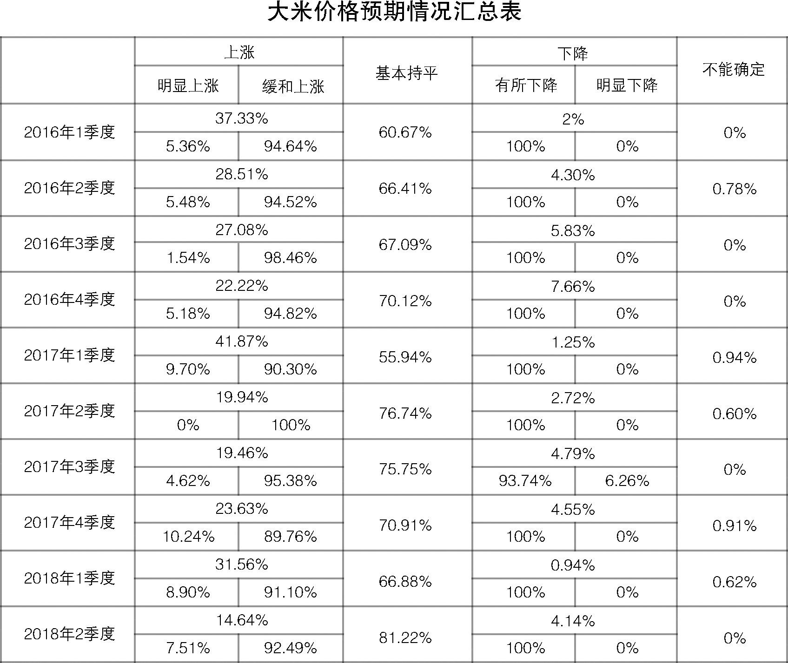
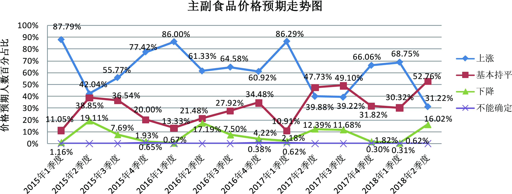
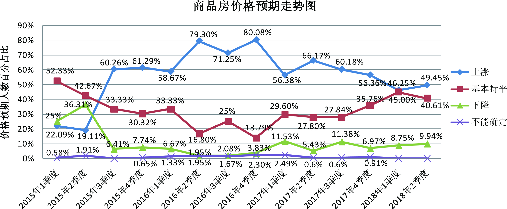
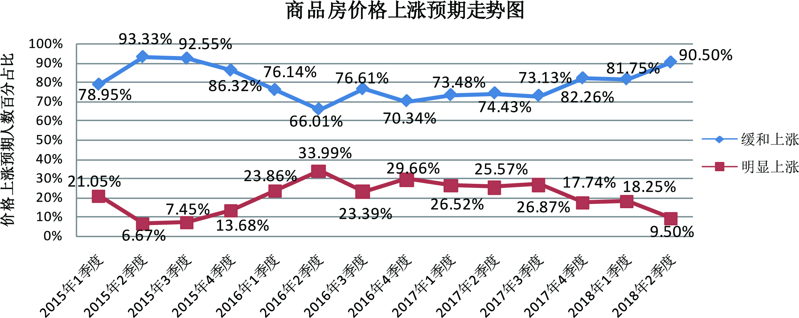
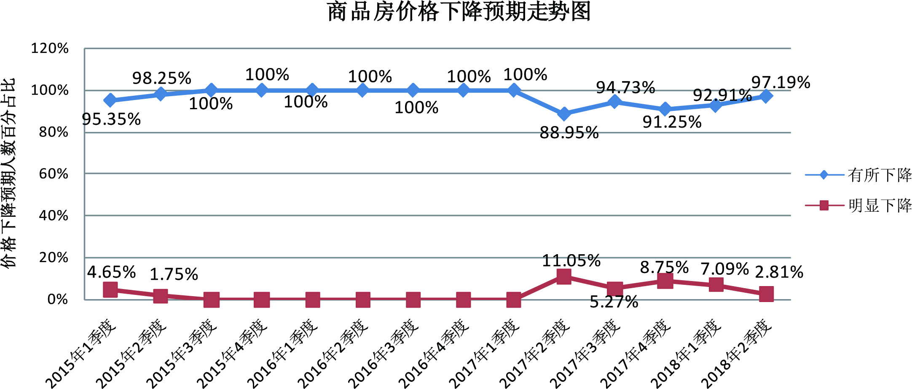

2018年二季度居民消费价格预期调查报告
为进一步增强居民消费价格预期调查的准确性，今年初，我们在全省新增了一批来自党政、经济、科研、房地产等领域和行业的专家学者及相关专业人士参与预期调查。
参加2018年二季度居民消费价格预期调查有362人，收回有效问卷362份。与一季度大部分人预计居民消费价格总水平和主副食品价格上涨相比，二季度居民消费价格总水平和主副食品价格预期以稳中缓涨为主，与去年同期基本一致。在持续紧缩的房地产调控政策和“房子是用来住的，不是用来炒的”总基调下，全省商品房总体价格继续保持稳中缓涨的预期，绝大多数城市商品房价格预期趋于稳定。
一、居民消费价格总水平预期稳中缓涨
与2018年一季度相比，预计二季度居民消费价格总水平上涨176人，占比48.62%，其中预计缓和上涨167人，明显上涨9人，分别占94.88%、5.12%；预计基本持平150人，占比41.44%；预计有所下降35人，占比9.67%；不能确定1人，占比0.27%；无人预计明显下降。
调查结果显示，预计二季度居民消费价格总水平上涨的人数减少至不到半数，其中超过九成的人预计缓和上涨；预计基本持平的人数约四成，接近预计上涨人数。绝大部分人预计居民消费价格总水平稳中缓涨。
从居民消费价格总水平预期走势看，二季度（本期）居民消费价格总水平预期和往年同期走势一致，上涨预期较上期迅速下降，比上期的68.13%减少了19.51个百分点；和去年同期的54.08%相比，本期上涨预期减少了5.46个百分点。
与上期30.94%的人预计居民消费价格总水平基本持平相比，本期增加10.5个百分点；与去年同期的37.46%相比，本期增加了3.98个百分点。
与上期极少数人预计居民消费价格总水平下降相比，本期有所回升，增加了9.05个百分点；与去年同期的8.16%相比，本期仅增1.51个百分点。
调查表明，与上期大多数人预计居民消费价格总水平上涨相比，本期居民消费价格总水平预期以稳中缓涨为主。与去年同期相比，本期居民消费价格总水平预期变化不大。




二、 主副食品价格预期稳中缓涨，并以平稳为主
与2018年一季度相比，预计二季度主副食品价格上涨113人，占比31.22%，其中预计缓和上涨107人，明显上涨6人，分别占94.68%、5.32%；预计基本持平191人，占比52.76%；预计有所下降55人，占比15.19%；预计明显下降3人，占比0.83%。
调查结果显示，预计二季度主副食品价格上涨的人数下降至约三成，其中超过九成的人预计缓和上涨；预计主副食品价格基本持平的人数超过半数，高于预计价格上涨的人数。绝大部分人预计主副食品价格稳中缓涨，并以平稳为主。

从主副食品价格预期走势看，与上期68.75%的人预计主副食品价格上涨相比，本期大幅下降，减少了37.53个百分点；与去年同期的39.88%相比，本期减少了8.66个百分点。
与上期30.32%的人预计主副食品价格基本持平相比，本期增加了22.44个百分点；与去年同期的47.73%相比，本期略增5.03个百分点。
与上期极少数人预计主副食品价格下降相比，本期下降预期迅速上升，增加15.4个百分点，但仍保持低位占比；与去年同期的12.39%相比，本期略增3.63个百分点。
调查表明，与上期大多数人预计主副食品价格上涨相比，本期主副食品价格以稳中缓涨预期为主；与去年同期相比，本期主副食品价格预期变化不大。
关于大米、食用油和猪肉价格预期情况。本期预计大米价格上涨53人，占比14.64%，其中缓和上涨49人，明显上涨4人，分别占92.49%、7.51%；基本持平294人，占比81.22%；有所下降15人，占比4.14%；无人预计明显下降。预计食用油价格上涨59人，占比16.29%，其中缓和上涨55人，明显上涨4人，分别占93.25%、6.75%；基本持平282人，占比77.9%；有所下降19人，占比5.25%；明显下降1人，占比0.28%；不能确定1人，占比0.28%。预计猪肉价格上涨100人，占比27.62%，其中缓和上涨96人，明显上涨4人，分别占96.02%、3.98%；基本持平168人，占比46.41%；有所下降86人，占比23.76%；明显下降7人，占比1.93%；不能确定1人，占比0.28%。
调查结果显示：国家二月份下调粮食最低收购价格，这对粮油肉的价格预期带来不同程度的影响，大米和食用油价格继续以平稳预期为主，看平人数占比均达开展预期调查以来的最高点，超过八成，较上期增加了十多个百分点；大米和食用油价格上涨预期均较上期明显回落。与去年同期相比，大米和食用油价格预期变化不大，其中，看平预期有所上升。与上期大多数人预计猪肉价格上涨相比，本期猪肉价格上涨预期大幅下降，看平和下降预期迅速上升，其中下降预期接近上涨预期。





三、商品房总体价格预期继续稳中缓涨，绝大部分城市预期趋于稳定
与2018年一季度相比，预计二季度商品房总体价格上涨179人，占比49.45%，其中预计缓和上涨162人，明显上涨17人，分别占90.5%、9.5%；预计总体价格基本持平147人，占比40.61%；预计总体价格有所下降35人，占比9.67%；预计总体价格明显下降1人，占比0.27%。
调查显示，约半数的人预计二季度商品房总体价格上涨，其中预计缓和上涨人数占九成；四成的人预计商品房总体价格基本持平。绝大部分人继续保持商品房价格稳中缓涨的预期。
从商品房价格预期走势看，房地产市场调控成效继续显现。本期商品房价格上涨预期，比上期的46.25%，略增3.2个百分点；与去年同期的66.17%相比，减少16.72个百分点。
与上期45%的人预计商品房价格基本持平相比，本期减少了4.39个百分点；与去年同期的27.8%相比，本期增加了12.81个百分点。
与上期8.75%的人预计商品房价格下降相比，本期略增1.19个百分点；与去年同期的5.43%相比，本期增加4.51个百分点。
调查表明，与去年同期大多数人预计商品房总体价格上涨相比，本期商品房总体价格延续上期保持稳中缓涨的预期。
近两年，全国和我省对房地产市场持续实行紧缩性调控政策，逐步挤压投机性需求，同时，坚持“房子是用来住的，不是用来炒的”的总基调。2018年，我省房地产市场依然是严控期，并进一步强化商品住房价格备案制度，开发企业拿地更趋理性，调控政策效应持续显现。从全省各地商品房价格预期情况看，绝大多数城市商品房价格预期趋于稳定。十三个设区市中，苏州和盐城商品房价格以平稳预期为主，其中，苏州预计商品房价格平稳的人数超过六成，盐城超过七成。南京、无锡、连云港、扬州、镇江五个市商品房价格以稳中缓涨预期为主。其中，南京、无锡和镇江商品房价格预期与上期相比，基本没有变化；连云港商品房价格预期与上期以平稳为主相比，本期上涨预期上升，平稳预期下降，绝大部分人预计商品房价格稳中缓涨；扬州商品房价格预期与上期以上涨为主相比，本期上涨预期迅速下降，平稳预期大幅上升。常州、徐州、南通、淮安、泰州、宿迁六个市商品房价格以缓和上涨预期为主，其中，徐州、南通、泰州、宿迁商品房价格预期和上期相比，变大不大；常州商品房价格预期与上期以平稳为主相比，本期上涨预期大幅上升，但以缓涨为主；淮安商品房价格上涨预期继续上升，但仍以缓涨为主。常州、淮安两地商品房价格需引起有关部门的关注和引导。




江苏省物价局-江苏省物价局网站
二○一八年四月